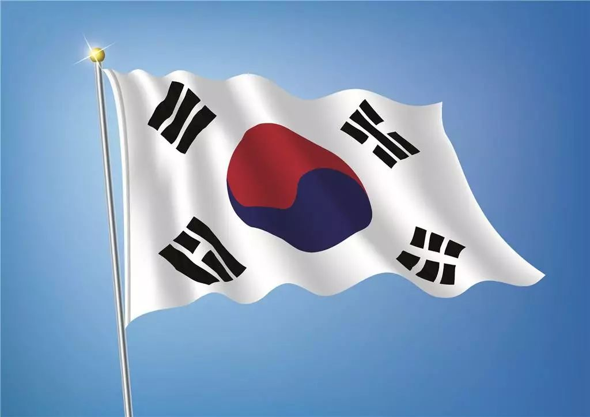

收录于合集

South Korea’s middle power diplomacy: A case of growing compatibility between regional and global roles
简 介
【作者介绍】 莫宗林 (Mo Jongryn)，韩国延世大学(Yonsei university)国际政治经济学教授。主要研究方向为韩国发展研究和城市研究。
【编译】 崔宇涵
【校对】 彭小朵 庞林立
【文章来源】 International Journal, Vol. 71, Issue 4, pp. 587-607 （2016-12-01)
核 心 观 点
**
**
韩国作为一个中等强国，在广泛的重要全球问题领域发挥重要作用，通过其首脑外交支持自由主义国际秩序。韩国外交政策和外交战略始终保持着中等强国的偏好，例如多边主义、法治、促进国际合作以及妥协；这种偏好尤其反映在韩国在处理地区性问题的政策上：例如在朝核问题上，韩国不仅接受了该问题的区域化，并接受了它在此问题上的中等强国地位，它采用中等强国的典型战略——调动外交资源向朝鲜施加国际压力——而不是单方面采取行动，例如动用武力或进行大规模经援。
但是为了维持和最大化发挥韩国中等强国外交的作用，韩国必须解决对其外交政策的结构性制约。首先，韩国应该使教育去民族主义化（de- nationalize）。第二，在应对外交政策挑战时，必须形成以国家利益为先的国内共识。最后，韩国的政治领导人和外交官必须在全球治理中创造新的机会，并通过中等强国外交提供切实的国家利益。

文章结构和论证
Introduction
**
**
作者首先介绍了中等强国外交。处于大国和其他小的发展中国家之间的中等强国对全球治理体系的稳定性有重要作用。被视为中等强国的国家，例如澳大利亚、加拿大、韩国等国，在全球治理中的利益与大国和较低收入的发展中国家不同，中等强国比其他发展中国家更有可能承担全球责任：与大国相比，中等强国由于没有帝国主义的历史，因而没有历史包袱，因此可以更有效地促进国际机构和多边主义的发展。
韩国在全球问题领域广泛发挥重要作用。举办2010年的G20峰会和2012年核安全峰会凸显出韩国日益增长的国际领导力；首尔还通过贸易、对外援助和发展问题的议程设置影响了全球治理。决定中等强国外交效果的重要影响因素是其所在的地区环境对其全球外交的影响，例如，一个地区性的主导国家可能在全球舞台上仅仅具有中等权力，因此会难以调和其地区和全球外交政策的紧张关系。作者认为，因为韩国在东亚地区也是一股中等力量，因此可以在地区和全球战略方面实现一致性，即同时采用中等强国外交战略。
The rise of Korea’s middle power diplomacy
**
**
韩国全球外交的转折点出现在2008年，在金融危机中召开的G20峰会使韩国第一次赢得全球经济的领导地位。自此韩国在国际经济合作、发展援助、全球安全等多个领域承担了新的全球责任：推动G20机制发展、为多边贸易自由化做出贡献、在绿色发展议题上成为积极推动者。最近，韩国已经开始在全球安全政策领域产生影响，如2012年韩国主办了第二次核安全峰会，此次峰会的成功表明中等强国外交可以有效促进传统安全领域的国际合作。
作为一个曾被殖民、常年贫弱的国家，民主化和“汉江奇迹”的快速工业化极大地改变了韩国的面貌，到2000年，韩国的经济成就和影响力已经达到了中等强国的水准，此后，韩国利用G20峰会、自由贸易协定等议题，使韩国在国际秩序的稳定中占有重要地位，并积极参与全球治理的主要领域。
Korea and regional cooperation
**
**
在东亚，韩国面临着严峻的外交政策挑战，东亚地区的冲突点比比皆是。由于韩国夹杂在中美两大国和日俄两大地区性大国之间，只能在地区问题上发挥中等作用。朝鲜问题的区域化、东亚的权力转移以及东亚地区主义的兴起，都有助于韩国发展中等强国外交。
** 朝鲜问题** ** 的** ** 多边化 /区域化**
** _
_**
自朝鲜战争结束以来，首尔一直坚持以“缔约方原则”（Parteienprinzip）与朝鲜打交道。这一原则在第一次朝核危机之后的双边谈判中首次被破坏；2002年第二次朝核危机后开始的六方会谈标志着该问题正式向区域化转变，也迫使韩国转变对朝政策的原则，根本上改变了韩国的外交政策文化和实践。虽然韩国的政治派系和政党普遍支持民族主义的单边方式，即朝鲜和韩国之间的双边谈判，但外交政策制定中有一个强烈的共识，即朝鲜是一个区域和多边问题。
** 中国崛起与韩国的战略反思**
** _
_**
自1987年韩国向民主政体过渡以来，进步派的政治和知识分子领导人对朝鲜外交政策产生了强大的影响，进步人士在与朝鲜和中国打交道时寻求更大的灵活性和参与度。金大中政府（1998-2003）采纳并实行了对朝鲜的阳光政策；他的继任者卢武铉政府（2003-2008）要求对韩国外交政策的作用进行根本改变，在中日以及中美之间发挥平衡作用。对韩国来说，东亚进入了权力转型时期，中国正在崛起，该地区的和平与繁荣取决于建立新的区域安全框架，韩国作为中间势力获得了战略空间，不仅重塑了与美国的关系，也重塑了与中国和日本的关系。
** 东亚地区的地区主义趋势与中国崛起**
** _
_**
东亚安全和贸易区域化的总趋势也是韩国中等强国外交崛起的推动力量。在安全领域，东盟是区域安全对话和互动的主要平台；在贸易和投资方面，亚太经济合作组织（APEC）是最具影响力的区域经济体。由于首尔在发展水平、国家规模和地理位置上处于中等地位，因此确定了其作为支持区域合作的中间力量的作用。在东北亚，中日韩三国开展了事实上的合作。自2008年以来，中日韩开始举行年度峰会，创建此峰会的治理背景来自东盟+3会议，峰会还促进和举办第一轨道和第二轨道会议。
自20世纪90年代末以来，专注于促进区域合作的中间力量战略，使韩国外交官在十年后将中等强国外交推向了全球舞台，韩国已经能够在全球舞台上相对平稳地过渡到中等强国战略，因为它在本地区和世界都是中等强国。
Constraints on middle power diplomacy
**
**
韩国地区和全球中等强国角色的一致性并不意味着韩国的中等强国外交不会面临内部和外部挑战，其面临着重大的国内国际障碍。
** 民族主义与中等强国认同的本质**
** _
_**
韩国强大的民族主义使政府难以推动中等强国外交。从理论上讲，两者应该可以相互促进：将民族自豪感作为推行外交政策的主要动力。然而，总的来说，民族主义并不是促进中等强国领导的积极因素。
首先，韩国对其邻国普遍抱有负面认知，并有强烈的主权意识。由于缺乏互信，韩国地区外交政策倾向于强调稳定、均势。第二，韩国有成为大国的民族主义情绪。第三，民族主义政府倾向于狭隘地定义国家利益，关注短期收益，而中等强国权力外交旨在实现长期的国家利益，有时以牺牲短期利益为代价。第四，民族主义是韩国外交政策追求包容性和普世价值的障碍。
** 国内政治**
** _
_**
韩国的保守派支持对朝鲜采取强硬政策，而进步人士倾向于支持对朝鲜的怀柔政策和适应中国崛起。各种商业团体根据其经济利益支持发展与中国、日本或美国的关系。中等强国外交战略在韩国的政治社会基础薄弱，目前，只有负责韩国多边外交活动的外交和经济部门的职业官僚是其重要支持者。
** 中美对抗的激化与** ** G20集团的衰落**
** _
_**
东亚地区区域主义衰退是中美在该地区激烈竞争加剧的结果。自2008年以来，中美之间的权力转移和中美关系的恶化，压缩了韩国外交的空间，尤其是在美国推出“亚太再平衡战略”后。中美关系的恶化使首尔发现难以实施一贯的外交政策，同时也影响了全球治理。
Conclusion
**
**
作者认为，上述的结构性约束并不是无法克服的，韩国依然有办法可以贯彻其中等强国外交战略。首先，韩国领导人应该开展全面的去民族主义教育，在全球化和区域化的时代，韩国公民能够理解开放的民族主义对外交政策的影响，更多地考虑国家的长远利益。 其次，应该促成强烈的国内共识，即国家利益在外交政策实施中优先于集体利益，但坚持狭隘的群体观点不符合任何人的利益，并破坏韩国在国际谈判桌上的讨价还价能力。最后，政治领导人和外交官必须在全球治理中，努力通过中等强国外交提供切实的国家利益。像所有外交政策战略一样，中等强国外交在没有强有力的国内支持的情况下是不可持续的，国内支持不能建立在善意和对原则和价值观的承诺之上。
点击左下角“ 阅读原文 ”获取原文pdf版
**
**
声明
此文为国政学人微信公众平台外文编译系列文章之一，由国政学人编辑首发，不代表本平台观点。欢迎转发分享，未经授权谢绝转载。如有问题，请联系guozhengxueren@163.com
更多阅读
国政学人 （ID：guozhengxueren)
为方便学人及时阅读高质量文章
别忘把国政学人设置 星标 哦~